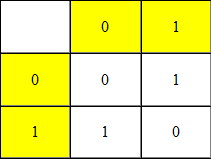
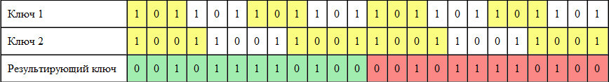

Power in simplicityLet’s talk about privacy a little bit. How often do you need to transfer some important digital information being sure it will not be read by anyone else? Due to availability of such programs as Echelon and PRISM, privacy becomes particularly actual. Today the world persistently dictates us that the more complicated algorithm the better it is, but this is not true for all cases. Today i will try to prove it. I will use relatively little-known cryptographical algorithm, which is used in the world basically by spies and governments to transfer top secret data. TheorySo, a little theory: We will talk about one of the simplest and at the same time the hardest algorithm -- about Vernam's cipher: Vernam's cipher (the second name is One-time pad - scheme of one-time pad) -- the system of symmetric encryption in cryptology, developed in 1917 by AT&T employees Major Joseph Mauborgne and Gilbert Vernam. Vernam’s cipher is the cipher system, which is proven to be absolutely cryptographical resistant. For data encrypting, plain text must be combined by «XOR» operation with a key (named one-time pad or OTR). Herewith the key must possess three critically important characteristics:
Wikipedia I guess for you it is not a secret that all stored and processed by computer information can be represented as numbers (because computer in translation from English -- means something, which computes, designed primarily for mathematical calculations) in the binary system:
And now let’s talk about the so-called operation «exclusive OR» (further XOR). And now let’s talk about the so-called operation «exclusive OR» (further XOR). The easiest way to explain is to describe it with a small table (see table 1), where horizontal lines will be bits of message, and vertical ones -- key.  In this way, by applying XOR to the plaintext 100111012 and key 101101112 we will get crypted data like 001010102. To decrypt this crypted data, let’s apply XOR once again, and we will get 100111012, i.e. our plain text. As you can see, ideas planted in the Vernam’s cipher are quite simple, and can be coded in any programming language in a few minutes. However, there is a question of making absolutely random key and it’s transformation to another side. But if we refuse absolute randomization, everything becomes very simple, especially in the time of social networking:
But this approach has weaknesses: the main Vernam’s cipher disadvantage is that the length of key must be larger or be equal to the length of plain text. It’s not so critical for small txt files, but it will be much harder to send even small but formatted document. But there is a solution of this problem: using of several keys with a mutually prime length (i.e. their lengths should not have common divisors but 1, of course). Thus by using two keys (lengths 2048 and 2047 bytes) we have two variants: either add the second key to end of the first one (it means we can encrypt 4095 bytes) or combine them by using XOR to get a key with 4192256 bytes (which is undoubtedly quite well, if these keys will be about 25 kb, that will approximately be equal to the half-quarter of the usual photo, and we will get the key with the length 655334400 bytes, which enable us to encrypt a document with size more than 600 Mb). So, how can we add two keys using XOR? Let’s look on the example with two keys with 3 and 4 bytes: 1012 and 10012. Let’s represent them as two «infinity» (in fact looped) tapes and gradually scroll and adjust them using XOR to the final key.  As you can see, using two keys with length n=3 and m=4 we generated a key with length nm=12 bytes. And now let’s go to practice. PracticeI will use python language, because it is a very simple and emphatic language, and to read program’s code on python you don’t even need to know the language. So, firstly we need so-called tape: def string(data): n=0 while True: yield data[n] n+=1 n%=len(data) The goal of this function is quite simple: at every request it should return next element in data order, as order comes to end -- we return to the beginning and so till infinity. Well, now we need to transform any file in two (it can be more than two, but we don’t know how it will affect on reliability) tapes and get a new one with needed length. Def genKey(data,l): s1, s2=None,None if len(data)%2==0: data.pop(0)#exclude first symbol, we need an odd length #usually it’s signature of all same files #so it just interferes us m=int(len(data)/2)#the middle of our list t1=(data[:m])#the first part will go to the first tape t2=(data[m:])#the rest will go to the second tape if len(t1)*len(t2)<l: raise Exception("Too small data to generate key") s1=string(t1)#create our tapes s2=string(t2)# out=[]#empty list for i in range(l):#loop from 0 to l-1 out+=[next(s1)^next(s2)]#format an array, ^ means XOR return out To make sure that our function is proper, let’s run it like this: genKey([1,0,1,1,0,0,1],12) => [0, 0, 1, 0, 1, 1, 1, 1, 0, 1, 0, 0] After symbol => goes it’s result, which is equal to the values in my latest table, calculated manually. It means that function works properly. Let’s try to get bigger key, then it is possible: >>> genKey([1,0,1,1,0,0,1],13) Traceback (most recent call last): File "<pyshell#5>", line 1, in <module> genKey([1,0,1,1,0,0,1],13) File "[öåíçóðà] vernam.py", line 19, in genKey raise Exception("Too small data to generate key") Exception: Too small data to generate key And we will get an error message. Works ;). Now we need to learn how to crypt files. The next function will help us: def crypt(datafile, keyfile): data=open(datafile,"rb").read() key=open(keyfile,"rb").read() gamma=None try: gamma=genKey(key,len(data)) except: print("Êëþ÷åâîé ôàéë ñëèøêîì êîðîòêèé äëÿ øèôðîâàíèÿ èñõîäíîãî ôàéëà.") return out=[data[i]^gamma[i] for i in range(len(data))] with open(datafile,"wb") as f: f.write(bytes(out)) To check it, the text of this article (i mean copy of it ;) ) was successfully encrypted and decrypted, as a key was used source of our encryptor. In conclusionAs you can see, the simple does not mean weak. Vernam’s cipher confidently entrenched in directions requiring super secrecy, so why do not we use the experience of spies too? ;) Sources: sources/FanOfGun/powerins
|